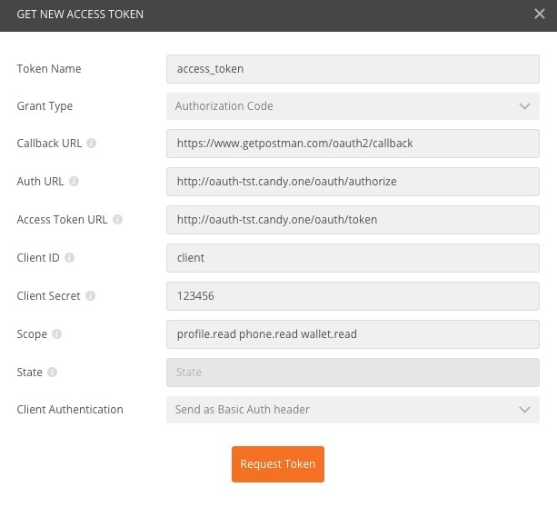
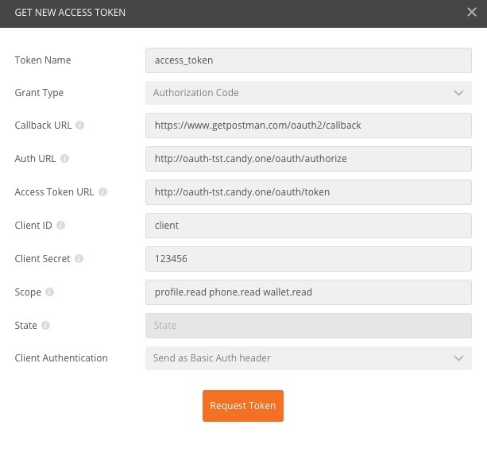

2.在新窗口中填入各个选项，点击request token
上图中scope的说明如下
授权部分采用业界主流的oauth2协议授权码模式，具体概念介绍可以参考oauth2介绍
下面以postman为例，介绍第三方对接我方授权平台的步骤。
1.选择postman的Authorization的选项，type选择Oauth 2.0,点击Get New Access Token
2.在新窗口中填入各个选项，点击request token
上图中scope的说明如下
| 名称 | 权限 | 功能 |
|---|---|---|
| profile.read | 读 | 获取用户基本信息 |
| phone.read | 读 | 获取用户拓展信息 |
| wallet.read | 读 | 获取用户钱包信息 |
3.输入在我方平台已经注册的手机号密码，点击登录

4.跳转到授权确认页面，点击授权
5.跳转到显示token页面，授权过程结束
授权成功后，第三方平台可以根据用户的token获取用户的基本信息，比如open_id,头像，昵称等。